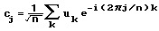

FFT/IFFT of Real Data |
fft(v) Returns the Fast Fourier Transform of an n-element vector v, where n = 2m. Result is a 1 + 2m-1 element vector whose jth element is given by:

where n is the number of elements in v and i is the imaginary unit. Calculated using the Cooley-Tukey algorithm.
ifft(u) Returns the inverse Fourier transform for u created with fft. Result is a 2m element vector whose jth element is given by:

FFT(v) Returns the Fast Fourier Transform of a vector v. The formula is equivalent to fft, but is scaled by 1/n instead of 1/√n, and uses a negative exponent going from the time to the frequency domain.
IFFT(u) Returns the inverse Fourier transform for u created with FFT. The formula is equivalent to ifft, but is scaled by 1 instead of 1/√n, and uses a positive exponent going from the frequency to the time domain.
The frequency associated with the kth element in the calculated FFT spectrum is given by:

where fs is the sampling frequency of the original signal and n is the number of samples. As a consequence, since k must be an integer, spreading in the spectrum occurs unless the sampling frequency is chosen so that

is always equal to an integer for any period 1/T in the signal.